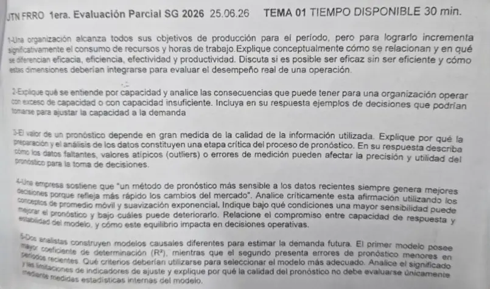

1° parcial 25/06/2026, teoría, tema 1
1° parcial, 25/06/2026
Enunciado


Propuesta de respuesta
Respuesta no verificada. La propuso Luta Studios con inteligencia artificial y ningún docente la revisó. Puede tener errores.
1. Eficacia, eficiencia, efectividad y productividad.
| Concepto | Qué es | En el caso |
|---|---|---|
| Eficacia | Hacer lo correcto para crear el valor máximo posible para la compañía (Chase, pág. 6) | Sí. Cumple los objetivos de producción |
| Eficiencia | Hacer algo al costo más bajo posible (Chase, pág. 6) | No. Gasta más recursos y horas |
| Productividad | Salidas divididas por entradas (Chase, pág. 28) | Baja, si las entradas crecen más que las salidas |
| Efectividad | Cumplir con la eficiencia y la eficacia a la vez (definición de una recopilación de estudiantes) | No, porque falta la eficiencia |
Se puede ser eficaz sin ser eficiente, y este caso lo muestra. Se llega al objetivo, pero a un costo mayor. Chase lo explica con un mostrador. Poner pocos empleados es eficiente, pero la fila crece y los clientes se van, y deja de ser eficaz. Por eso maximizar las dos a la vez trae conflictos (pág. 6).
Para evaluar el desempeño real hay que mirarlas juntas. La eficacia dice si se creó el valor buscado. La eficiencia y la productividad dicen a qué costo, y la productividad tiene que compararse con períodos anteriores o con operaciones similares, porque es relativa (Chase, págs. 28 y 29).
2. Capacidad. Es la cantidad de recursos disponibles para producir dentro de un período concreto, siempre relativa al tiempo (Chase, pág. 122).
- Insuficiente. Se pueden perder clientes por un servicio lento o dejar entrar a los competidores (Chase, pág. 123).
- Excesiva. Puede haber que bajar precios para estimular la demanda, subutilizar personal, cargar inventario de más o buscar productos menos rentables (Chase, pág. 123).
| Horizonte | Decisiones para ajustar la capacidad a la demanda |
|---|---|
| Largo, más de un año | Edificios, equipamiento e instalaciones |
| Mediano, de 6 a 18 meses | Contratar, recortar personal, herramientas, equipo menor, subcontratar |
| Corto, menos de un mes | Horas extra, transferencias de personal, otras rutas |
(Chase, pág. 122.) Para medir el ajuste se usa el índice de utilización, la capacidad usada sobre el mejor nivel de operación, y el colchón, la capacidad que queda por encima de la demanda (Chase, págs. 124 y 129).
3. La calidad de la información. Manipular y limpiar los datos es el segundo de los cinco pasos del pronóstico (Hanke, págs. 5 y 6), y es crítico porque todo pronóstico supone que las condiciones del pasado se mantienen (Hanke, págs. 4 y 5). Si el pasado está mal registrado, el modelo aprende algo que no pasó.
- Faltantes. Cortan los promedios móviles y hay que estimarlos (Hanke, pág. 5).
- Atípicos. Quedan fuera de y (Hanke, págs. 20 y 21). Uno al final de la serie mueve la recta de tendencia, y uno en medio distorsiona el índice de ese trimestre. La mediana de los índices elimina su influencia (Hanke, pág. 177), y Census X-12 ajusta extremos y faltantes (Hanke, pág. 188).
- Errores de medición. Un dato mal cargado pasa por la tendencia y la estacionalidad al pronóstico.
Para decidir, el pronóstico es el primer número de la cadena. Con él se planea la capacidad (Chase, págs. 128 y 129) y del plan maestro salen los brutos del MRP. Un error ahí arrastra a todo lo que sigue.
4. «Un método más sensible siempre decide mejor». Es falso como regla general.
- En el promedio móvil, un chico responde mejor a cambios repentinos y un grande sirve con fluctuaciones amplias (Hanke, págs. 115 y 116).
- En la suavización, un cerca de 1 hace que el pronóstico sea en esencia la observación actual, y uno cerca de 0 lo vuelve estable (Hanke, págs. 119 a 121).
Más sensibilidad mejora el pronóstico cuando hay cambios reales de nivel, porque los sigue antes. Lo deteriora cuando la serie tiene mucho ruido, porque copia cada fluctuación al azar como si fuera un cambio. El compromiso es entre responder rápido y ser estable, y se resuelve con los datos, eligiendo el de menor MSE (Hanke, págs. 120 y 121) y vigilando la señal de control (págs. 124 a 126). En lo operativo, un pronóstico demasiado sensible cambia el plan de producción, las compras y la dotación en cada período, y uno demasiado estable llega tarde a un cambio real y deja capacidad de más o de menos (Chase, pág. 123).
5. Más contra menos error reciente. Me quedo con el segundo modelo, si sus residuos son aleatorios.
- mide cuánto explica el modelo de los datos que usó para ajustarse.
- Tener el modelo que mejor representa lo histórico no garantiza mayor exactitud futura (Hanke, pág. 81).
- El quinto paso evalúa con datos recientes que quedaron afuera (Hanke, págs. 5 y 6). Los errores menores en los períodos recientes se acercan más a esa prueba.
- Una técnica adecuada tiene residuos aleatorios y aproximadamente normales y coeficientes significativos (Hanke, págs. 84 y 85), y la correlación no prueba causalidad (Hanke, págs. 38 y 39).
Por eso la calidad no se evalúa solo con medidas internas como el . Ven el ajuste hacia atrás, no lo que el modelo va a hacer con datos nuevos.
Respuesta no verificada. Puede tener errores.
Se armó con 1° parcial, secciones Productividad, eficiencia y eficacia, Capacidad, Calidad de datos y valores atípicos, Los cinco pasos del pronóstico, Promedios móviles, Suavización exponencial, Ajustar bien lo pasado no asegura acertar el futuro y Regresión.
Quedó en duda: La efectividad sale de una recopilación de estudiantes, no de Chase. El efecto operativo de un pronóstico demasiado sensible es un razonamiento propio con las consecuencias de capacidad de Chase. En 5 el material no explica los supuestos de la regresión, así que la elección se apoya en Hanke, págs. 81 y 84 y 85.
¿Cómo te fue?
Marcá cada tema del examen.
- ProductividadProductividad, eficiencia y eficacia, en 1° parcial
- CapacidadCapacidad, en 1° parcial
- Calidad de datosCalidad de datos y valores atípicos, en 1° parcial
- SuavizaciónSuavización exponencial, en 1° parcial
- RegresiónRegresión, en 1° parcial